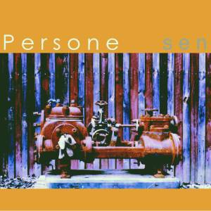

Persone
Sen
La albumo Sen (la akustika albumo de Persone) - estas la kvina albumo de Persone. Ĝi estis eldonita en 2002 kiel k-disko. Ĝi enhavas 11 akustikajn pecojn. Mendu ĝin!
Enhavo
- Pli ol nenio (Martin)
- La fantoma lum’ (Bertilo)
- Mi ĉiam kredis (ke la koro) (Martin)
- Estu ĉiam (Bertilo)
- Sola en vaku’ (Martin)
- Revoj 1 (Martin)
- Korpo kaj anim’ (Bertilo)
- Patro nia (Martin)
- Perloj sur la ter’ (Bertilo)
- Lasu min sonĝi 2 (Martin)
- Nun mallumas ekstere 3 (Martin)

(1) Revoj aperis jam en la albumo Povus esti simple, sed tiam en elektra versio.
(2) Lasu min sonĝi aperis jam en la albumo ...sed estas ne.
(3) Nun mallumas ekstere aperis jam en la albumo Povus esti simple. La kanto estis tamen remastrita por Sen.